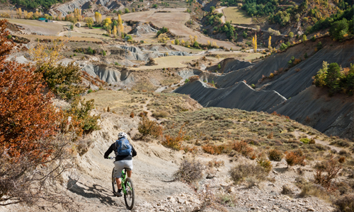
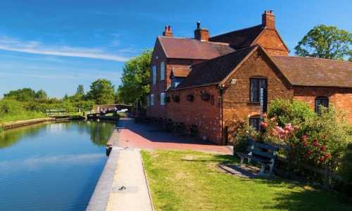

Welcome to
Discover the world from the palm of your hand
- Find walking routes anywhere
- Create a route as-you-go, to share with the community
- Leave your mark with photos and note uploads


Leave the beaten trail behind
Search for new and exciting adventures
Search for new and exciting adventures
Your own pace
No targets, no challenges, no pressure
No targets, no challenges, no pressure
The spot you always dreamed of
Use world-wide notes and photos for a guided tour of planet earth
Use world-wide notes and photos for a guided tour of planet earth
Current development status: Build in progress.
I will open up the registration page once the site is done, and app on the Play Store.
Ramble Online is a final year university project for James Baxter, University of Sussex.
The site and app are in constant development and no guarantees of data retention or security can be made. It is strongly advised you use a unique password (although passwords are encrypted, so I can't see them.
You can find me on LinkedIn, or contact me by Email if you have any issues using the site.